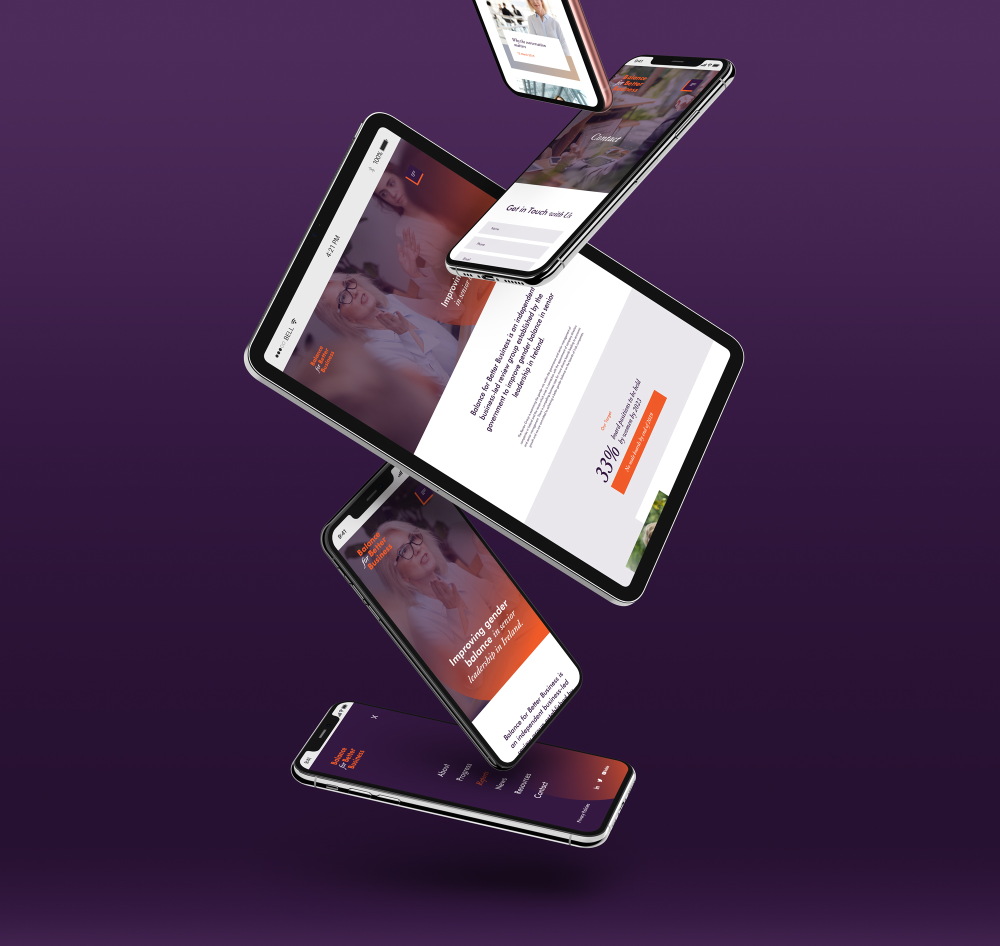
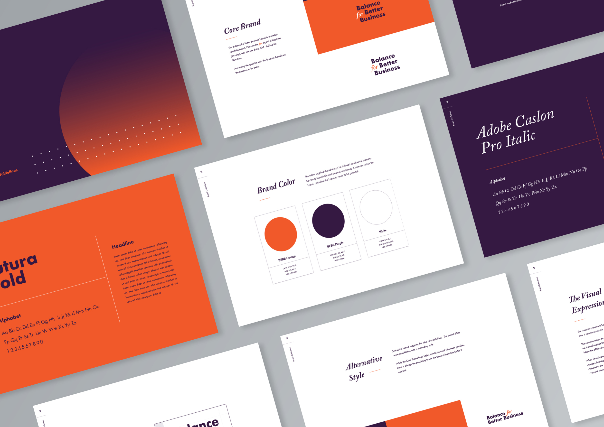
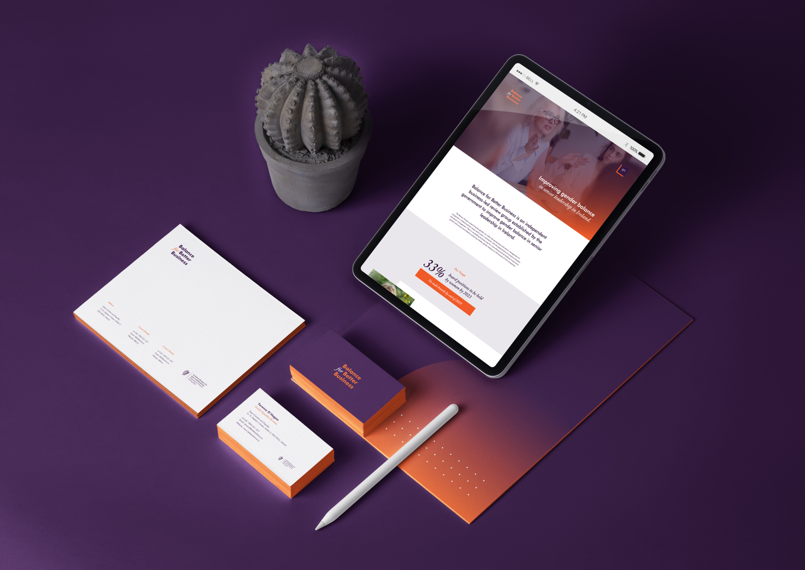
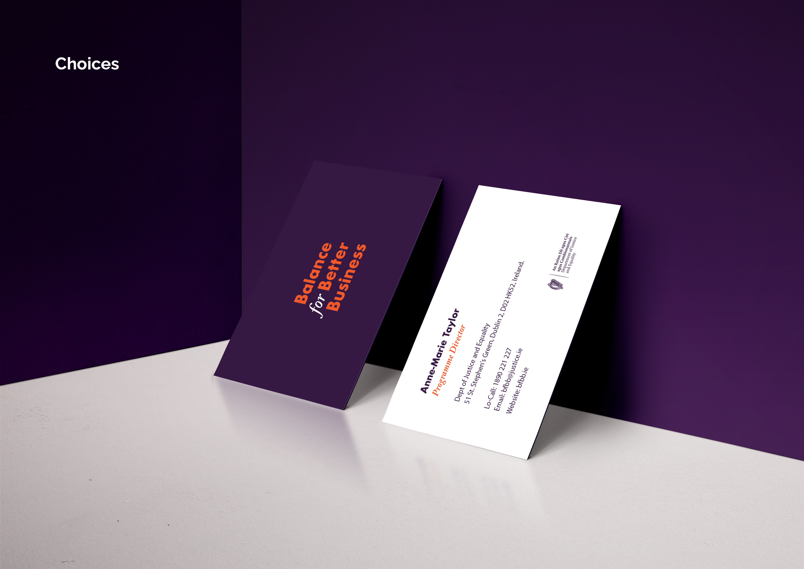
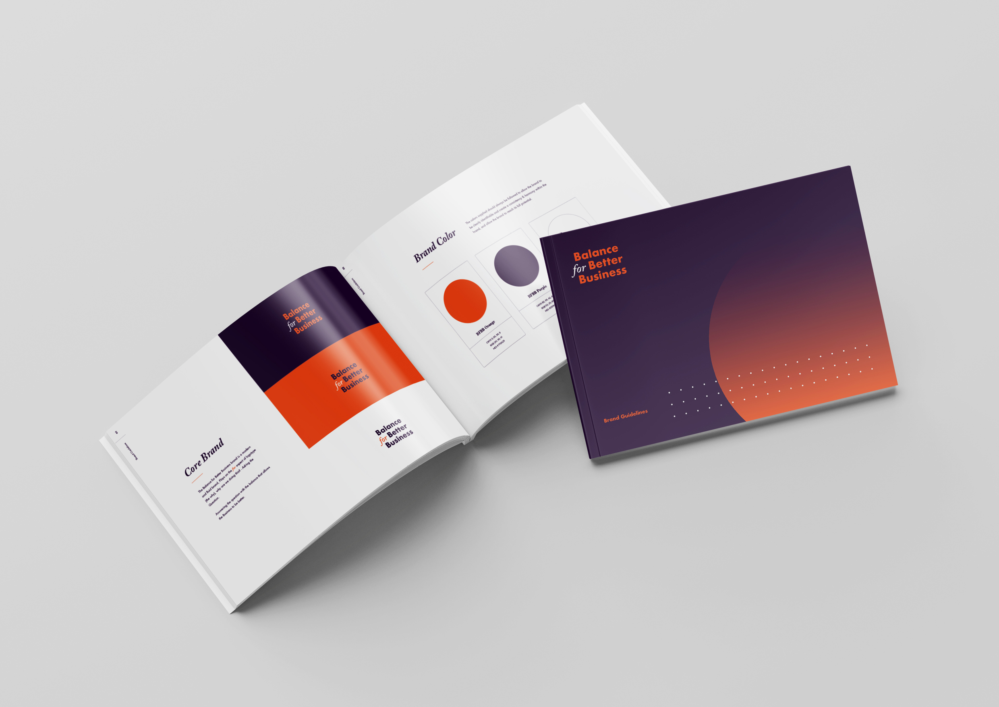
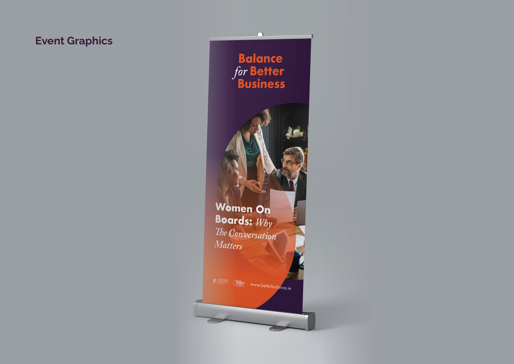
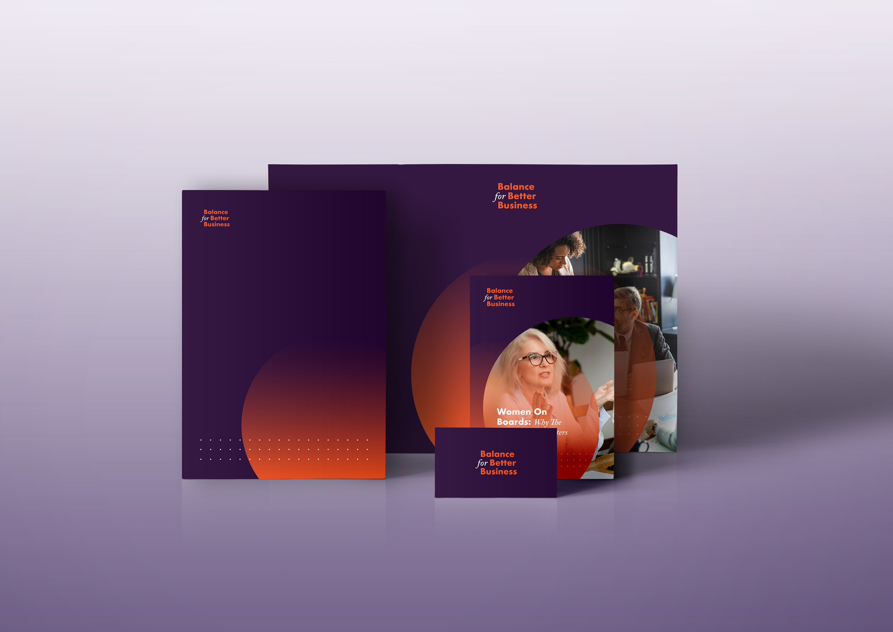

Balance for Better Business
Improving Gender Balance
Balance for Better Business is the independent, business-led Review Group established by the Irish government to improve gender balance in senior leadership. Selected by the Department of Justice, I developed the public identity, website and communications for an organisation with genuinely important social and business objectives.

A challenging brief
The brand had to reflect the status of a government-established review group while representing everyone working toward the same goal: a level playing field, and companies reaping the benefits of diverse boards and leadership teams. I spoke with large organisations about their approach to gender balance in recruitment and promotion, research that pointed clearly to an inclusive, informative tone.

Answering the 'why'
The identity is built on the answer to 'why are we doing this?': balance is better for business, through improved performance. The logo has a deliberately conversational character, mirroring the group's role as a catalyst for debate on female representation in Irish business.



An open, informative platform
I designed a modern, inclusive website structured around clarity: this is who we are, what we do, the progress made and the ambitions ahead, supported by news, analysis and statistics, a social strategy across Twitter and LinkedIn, and a full suite of offline collateral and guidelines.


Closing the gap
Since the group's launch, 41% of appointments to listed-company boards have been female (31% at large private companies), female representation on ISEQ 20 boards rose 13 points, and Ireland's gap to the EU average narrowed from 8.1% to 0.9%, climbing from 17th to 12th among EU countries. I'm proud this work played its part in that awareness.